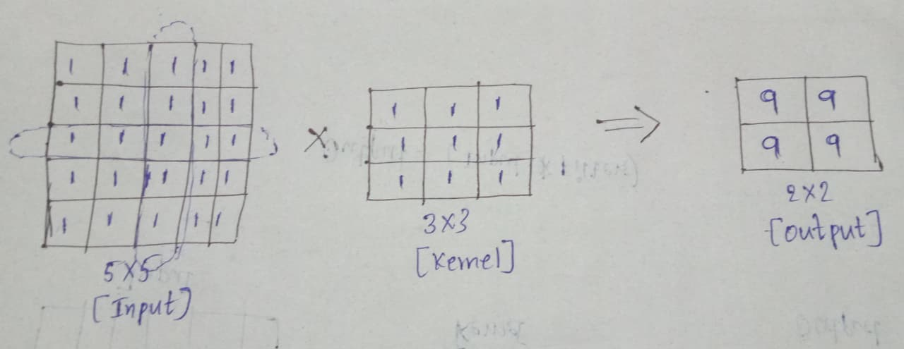
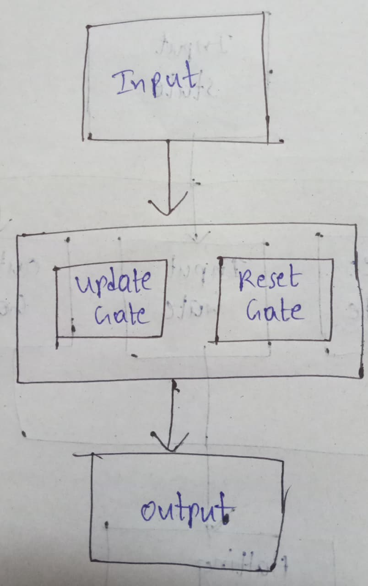
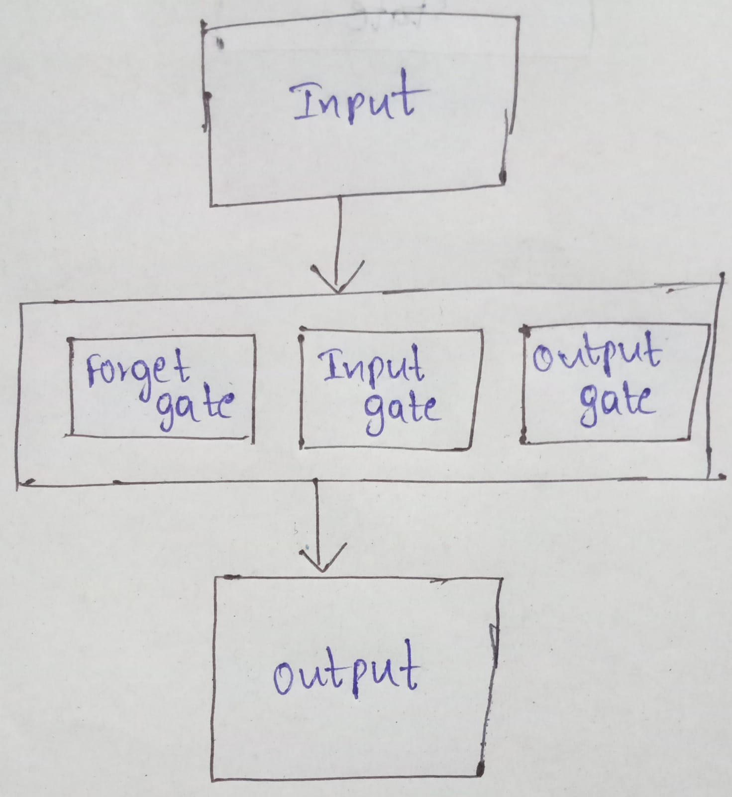

| Single Channel Convolution | Multi-Channel Convolution |
|---|---|
| It uses a single channel to process the input in the CNN | It uses multiple channels to process the input in the CNN |
| Input Data: 2D Matrix | Input Data: 3D Tensor |
| Kernel: 2D Filter | Kernel: 3D Filter |
| Output: 2D Feature Map | Output: 3D Feature Map |
| It uses a few Parameters | It uses more parameters |
| Low Cost | High Cost |
|  |  |

| GRU | LSTM |
|---|---|
| GRU stands for Gated Recurrent Unit | LSTM stands for Long Short-Term Memory |
| GRU is an Advanced type of RNN | LSTM is an Advanced type of RNN |
| GRU is used to solve the Vanishing Gradient Problem | LSTM is used to solve the Vanishing Gradient Problem |
There are mainly two types of gates used in GRU. They are:
|
There are mainly three types of gates used in LSTM. They are:
|
| There is no Cell State | There is a Cell State in LSTM |
| It uses a few Parameters | It uses more parameters |
| Low Cost | High Cost |
|  |  |
| PyTorch | TensorFlow |
|---|---|
| PyTorch was developed by Facebook | TensorFlow was developed by Google |
| It is from the Torch Library | It is from the Python Library |
| It works on the Dynamic Graph | It works on a Static Graph |
| Very Simple | Very Complex |
| Very Weak | Very Strong |
| PyTorch has a Smaller Community | TensorFlow has a Larger Community |
| PyTorch has few features when compared to TensorFlow | TensorFlow has more features when compared to PyTorch |
| More Scalable | Less Scalable |
| More Flexible | Less Flexible |